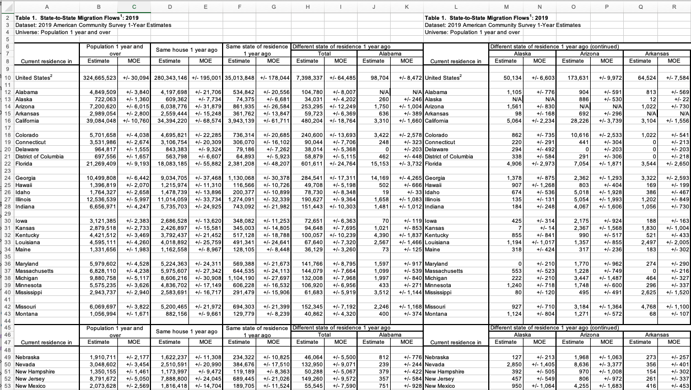

Program 9: State Migration Flows. Due 10am, Wednesday, 29 March.
Learning Objective: to increase facility with standard linear algebra approaches for modeling data.
Available Libraries: pandas, numpy, sklearn, and core Python 3.6+.
Data Sources: State-to-State Migration Flows from the US Census.
Sample Datasets:
In Lecture 8 and Explained Visually, we recapped matrices, eigenvectors and eigenvalues. We introducded Markov Chains with a simplified example of migration flow between California and New York:
For this program, we will use the US Census bureau's data on migration between states. The data is stored, yearly, as an excel file. We begin by extracting and cleaning the data. We will then use subsets of the data to model flows between subsets of states both after a fixed number of years and the steady state.
import_data(file_name):
This function has one input:
file_name: the name of a .xls file from State-to-State Migration Flows from the US Census.
pd.read_excel) and returns a DataFrame with 51 rows: the first row for United States, as well as a row for each state, as well as the District of Columbia. The columns of the DataFrame should be arranged as:
0.Locale and contains the name of the area. The first row should be United States, followed by the states in alphabetical order: Alabama, Alaska, ..., Wymoning (following the order in the initial datasets). Note that we're leaving off Puerto Rico and the US Territories since they are not counted in the overall estimates.
Total and contains the total population for each row.
Stayed contains the sum of the those who stayed in the same house and same state (i.e. the sum of two columns from the initial excel file).
Alabama contains the number of new residents to Alabama from each state. For the row Alabama, this cell
(e.g. df.loc['Alabama','Alabama']) would be 0, since it's the same state.
For the row Alaska, this cell, (e.g. df.loc['Alabama','Alaska']), would be the number of people who moved from Alaska to Alabama this past year. In the case of 2019 data, there were 1,105 people who previously lived in Alaska and moved to Alabama.
United States2, has the total number of people for its first column, the number of people who didn't move, followed by the total who moved into each state.make_transition_mx(df):
This function has one input:
df: a DataFrame with columns, Locale, Total, Stayed, followed by states' data. The first row (for locale United States2) is ignored and the subsequent rows should contain the states in the same order as the column labels.
moving(transition_mx, starting_pop, num_years = 1):
This function has three inputs and returns an array:
transition_mx: an square
array of values between 0 and 1. Each column sums to 1.
starting_pop: an 1D array of positive numeric values
that has the same length as transition_mx.
num_years: a column name containing the dependent variable (what's being predicted) in the model. It has a default value is 1.
num_years.steady_state(transition_mx, starting_pop):
This function has two inputs and returns an array:
transition_mx: an square
array of values between 0 and 1. Each row sums to 1.
starting_pop: an 1D array of positive numeric values
that has the same length as transition_mx.
num_years: a column name containing the dependent variable (what's being predicted) in the model. It has a default value is 1.
Let's start by importing the data. The datasets are in excel files from the State-to-State Migration Flows page at the US Census. Here's the 2019 data opened in Excel:
It has lots of extra rows (and columns) with notes and repeated labels that will need to be filtered out, so, will not be as simple as the importing of data in previous assignments. For this assignment, you will need to ignore the extraneous lines and columns and aggregate others. Given the large number of filtering steps, it is easiest to do this piece by piece, checking as you go, since a small discrepency early can propagate and be difficult to find later. Some useful options and commands to do this:
pd.read_excel (as well as pd.read_csv), you can specify the number of lines to skip at the beginning of the file (skiprows=...) and the end of the file (skipfooter=...).pd.read_csv has an option to skip empty or blank lines when reading in a file, pd.read_excel does not. So, you will need to remove those after you have read the file into the DataFrame.df = df.loc[:, ~df.columns.str.contains("MOE")]MOE and the ~ gives the opposite (i.e. all columns that don't contain MOE).
pd.read_csv has an option to skip empty or blank lines when reading in a file, pd.read_excel does not. So, you will need to remove the blank lines from the DataFrame. Estimate.4, Estimate.5, ..., Estimate.58) and a list of the locales from that column and replace using a command such as:
df = df.rename(columns=dict(zip(old_labels,locales)))Let's try the importing data function on the 2019 dataset:
df_2019 = import_data('State_to_State_Migrations_Table_2019.xls')
print(df_2019)which prints:
Locale Total Stayed Alabama Alaska Arizona Arkansas California ... Texas Utah Vermont Virginia Washington West Virginia Wisconsin Wyoming
0 United States2 324665523 315356994 98704 50134 173631 64524 653551 ... 453015 88426 22714 276849 199758 40460 101668 23287
1 Alabama 4849509 4732540 0 1105 904 813 3690 ... 8405 2083 0 2876 1883 421 1307 0
2 Alaska 722063 683737 260 0 886 12 2547 ... 4332 1092 44 2216 1435 355 228 242
3 Arizona 7200620 6900711 1750 1561 0 1022 59713 ... 17482 8917 662 3837 17636 237 3688 664
4 Arkansas 2989054 2921206 636 98 692 0 4967 ... 12851 710 0 671 571 133 797 1109
5 California 39084048 38337359 3310 5064 28226 3104 0 ... 37063 8504 784 24506 31882 303 4811 1159
6 Colorado 5701658 5432135 3422 862 10616 1022 29350 ... 32295 2458 161 6796 7333 502 4454 3860
7 Connecticut 3531986 3412824 248 220 441 0 4049 ... 2141 120 103 1764 191 408 232 0
8 Delaware 964817 922569 0 294 0 0 161 ... 744 75 0 1260 45 219 0 0
9 District of Columbia 697556 628691 462 338 291 0 3437 ... 2073 0 54 8828 852 324 362 0
10 Florida 21269409 20464393 15153 4906 7054 3544 28628 ... 26174 3433 3355 26031 6870 2186 6563 624
11 Georgia 10499808 10164773 14169 1378 2362 3322 15437 ... 22452 1182 265 11686 2879 408 3898 968
12 Hawaii 1396819 1332540 502 907 803 169 10954 ... 1667 772 65 3107 4322 197 83 0
13 Idaho 1764327 1679116 19 674 5018 386 17722 ... 3198 7371 0 1715 13505 0 620 662
14 Illinois 12536539 12288150 1658 135 5054 1202 14692 ... 9106 326 74 5338 4364 379 12021 109
15 Indiana 6656971 6478795 1481 184 4067 1056 7255 ... 7095 490 40 2096 2186 10 1962 118
16 Iowa 3121385 3034610 70 425 2175 188 5819 ... 3936 3 0 1051 781 409 4722 434
17 Kansas 2879518 2771900 1021 7 2367 1830 4957 ... 8374 378 0 1556 2325 174 610 442
18 Kentucky 4421512 4309565 4390 855 990 521 3410 ... 2878 1746 95 4170 2232 983 2088 0
19 Louisiana 4595111 4510233 2567 1194 1357 2497 4228 ... 19675 129 112 1526 805 49 529 0
20 Maine 1331656 1290663 73 318 317 183 1644 ... 459 161 424 307 541 11 353 88
21 Maryland 5979602 5793751 1597 0 1770 274 10092 ... 4954 1186 368 23429 1338 4933 1790 0
22 Massachusetts 6828110 6620142 1099 553 1228 0 11430 ... 6088 1286 2167 3768 2353 63 281 154
23 Michigan 9880758 9710406 1997 222 3447 464 8672 ... 8434 428 32 3468 1726 767 4361 139
24 Minnesota 5575235 5442930 433 1240 1748 296 6232 ... 5916 314 0 1743 5166 0 18403 207
25 Mississippi 2943737 2875170 3512 80 495 2625 3024 ... 4689 406 10 2244 526 647 1146 0
26 Missouri 6069697 5894768 2246 927 3184 4768 7970 ... 11507 1567 1094 2682 2903 829 3004 45
27 Montana 1056994 1011935 400 1124 1271 68 5298 ... 780 1900 134 768 4907 176 107 1662
28 Nebraska 1910711 1856559 812 127 1968 273 2035 ... 4199 1111 0 1180 365 148 725 1000
29 Nevada 3048602 2895267 239 2850 8636 356 47322 ... 5240 6593 0 1959 3906 74 1156 46
30 New Hampshire 1350155 1293186 379 392 970 154 1110 ... 892 272 2370 890 582 155 621 0
31 New Jersey 8791672 8578245 357 457 806 261 9155 ... 4489 540 133 4810 996 494 308 0
32 New Mexico 2073628 2006123 751 950 4255 416 5915 ... 15762 766 102 564 1330 0 142 1451
33 New York 19240920 18851752 851 596 2185 1130 24332 ... 13033 1185 3084 12180 2697 530 1450 72
34 North Carolina 10371906 10004581 4697 1568 5319 1976 18023 ... 14226 1125 435 29764 2984 2950 1643 161
35 North Dakota 750501 709863 0 214 945 46 404 ... 3075 444 0 302 1759 0 313 730
36 Ohio 11556037 11306918 1203 468 3591 1195 12277 ... 13564 2629 582 5339 2155 6056 3490 492
37 Oklahoma 3907258 3791883 241 188 2962 7421 7408 ... 26383 155 363 2146 2039 216 64 326
38 Oregon 4178578 4028858 162 2068 6540 425 37927 ... 4441 3684 298 1582 21339 0 564 680
39 Pennsylvania 12670245 12351358 1898 1008 3104 502 13048 ... 11490 869 1483 12193 2394 3763 942 24
40 Rhode Island 1050602 1011092 0 0 423 0 1854 ... 1597 186 428 863 144 83 136 0
41 South Carolina 5092727 4893662 873 680 1704 579 7785 ... 7631 548 336 10143 2112 1559 1702 0
42 South Dakota 872708 841142 339 14 650 141 1778 ... 1080 199 0 76 280 0 391 473
43 Tennessee 6754461 6537328 6294 1506 1457 5252 11874 ... 15068 1240 336 8040 3821 1235 1188 46
44 Texas 28642658 27865912 8791 4622 21205 12341 82235 ... 0 10072 445 18973 15128 1059 4824 1311
45 Utah 3162102 3050711 1027 526 6301 888 17821 ... 4871 0 233 922 4481 322 547 1549
46 Vermont 617560 594528 77 402 41 0 1048 ... 1082 41 0 527 413 20 0 30
47 Virginia 8439982 8105540 4028 1256 2513 1011 16994 ... 13924 1736 1633 0 6580 5518 1518 167
48 Washington 7527366 7231397 1060 4255 8263 83 46791 ... 18528 5440 391 6656 0 275 1456 626
49 West Virginia 1773280 1728350 245 192 356 120 940 ... 927 0 19 6008 129 0 41 0
50 Wisconsin 5760481 5635872 678 1070 1917 290 6886 ... 5049 808 0 1878 1682 572 0 1417
51 Wyoming 572884 541255 1227 54 757 298 3211 ... 1696 1746 0 415 885 308 27 0
[52 rows x 54 columns]Let's try the importing data function on the 2019 dataset:
tr_mx = make_transition_mx(df_2019)
print(tr_mx)
which prints:
[[9.71328865e-01 2.27858119e-04 1.86410624e-04 ... 8.68129124e-05
2.69511821e-04 0.00000000e+00]
[3.60079384e-04 9.75880239e-01 1.22703975e-03 ... 4.91646851e-04
3.15761921e-04 3.35150811e-04]
[2.43034628e-04 2.16786888e-04 9.46921529e-01 ... 3.29138324e-05
5.12178118e-04 9.22142815e-05]
...
[1.38162050e-04 1.08273933e-04 2.00757918e-04 ... 9.60680934e-01
2.31209961e-05 0.00000000e+00]
[1.17698505e-04 1.85748378e-04 3.32784710e-04 ... 9.92972635e-05
9.74662772e-01 2.45986403e-04]
[2.14179485e-03 9.42599200e-05 1.32138443e-03 ... 5.37630655e-04
4.71299600e-05 9.78368299e-01]]Let's pare the matrix down to just California, New York, and a catch-all category for all other states:
df_ca_ny = df_2019[ ['Locale','Total','Stayed','California','New York'] ]
df_ca_ny = df_ca_ny[ df_ca_ny['Locale'].isin(['United States2','California','New York']) ]
print(df_ca_ny)
tr_mx_ca_ny = make_transition_mx(df_ca_ny)
np.set_printoptions(precision=3, suppress=True)
print(tr_mx_ca_ny)
other = np.ones(2) - (tr_mx_ca_ny[0]+tr_mx_ca_ny[1])
tr_mx_ca_ny = np.concatenate((tr_mx_ca_ny,[other]),axis=0)
other_2_ny = (df_ca_ny.iloc[2,1]-(df_ca_ny.iloc[2,2]+df_ca_ny.iloc[2,3]))/df_ca_ny.iloc[2,1]
other_2_ca = (df_ca_ny.iloc[1,1]-(df_ca_ny.iloc[1,2]+df_ca_ny.iloc[1,3]))/df_ca_ny.iloc[2,1]
other_2_other = 1.0 - (other_2_ca + other_2_ny)
others = np.array([[other_2_ca], [other_2_ny], [other_2_other]])
tr_mx_ca_ny = np.append(tr_mx_ca_ny,others,axis=1)
print(tr_mx_ca_ny)which prints:
Locale Total Stayed California New York
0 United States2 324665523 315356994 653551 439708
5 California 39084048 38337359 0 37567
33 New York 19240920 18851752 24332 0
[[0.971 0.001]
[0.001 0.981]]
[[0.971 0.001 0.039]
[0.001 0.981 0.019]
[0.027 0.018 0.942]]In words, we have:
Here's another example, using larger migration flows to make the patterns easier to see. If you have that people move from the following three states with the probabilities of moving each year:
t_mx = np.array([[.7, .07, .1],
[.25,.9,.15],
[.05,.03,.75]])
pop0 = np.array([20, 40, 25])
we can compute the population after 1 years, by taking the intial populations, computing what fraction move to each of the other states:
pop1 = t_mx @ pop0
print(f'Population of each state after 1 year: {pop1}.')Population of each state after 1 year: [19.3 44.75 20.95].Similarly, the population after 2 years, can be found by multiplying the population after 1 year by the transition matrix. More generally, the population after k+1 years can be found by multiplying the populations at year k by the transition matrix. The steady state population can be found by first finding the eigenvector corresponding to the maximal eigenvalue of 1, scaling it so its entries sum to 1 (i.e. divide through by its sum) to get percentages. And then, multiplying the percentages by the total population.
For example, continuing from above, and assuming your functions are in p43 and the appropriate libraries are loaded:
pop1 = moving(t_mx, pop0)
print(f'Population of each state after 1 year: {pop1}')
pop100 = p43.moving(t_mx, pop0, num_years=100)
print(f'Population of each state after 100 years: {pop1}')
pop_steady = p43.steady_state(t_mx, pop0)
print(f'Steady state population: {pop_steady}')Population of each state after 1 year: [19.3 44.75 20.95]
Population of each state after 100 years: [16.91747573 57.76699029 10.31553398]
Steady state population: [16.91747573 57.76699029 10.31553398]Note: you should submit a file with only the standard comments at the top, this function, and any helper functions you have written. The grading scripts will then import the file for testing.
Hints:make_transition_mx function returns a 2D numpy array. To create it, there are several functions that may be useful:
pd.div allows you to divide every entry in a pandas DataFrame by a column.pd.to_numpy converts a pandas DataFrame of numeric values into a numpy array.np.fill_diagonal is useful for filling the diagonal entries of the transition matrix with the fraction of people who stayed in the state.numpy.linalg.matrix_power described in
the numpy API reference.
numpy.linalg.eig function returns an array of eigenvalues and the associated eigenvectors as columns of an array. For the example above,
import numpy.linalg as LA
w,v = LA.eig(t_mx)
print(f'The eigenvalues are: {w} and eigenvectors are:\n{v}.')The eigenvalues are: [ 1. -0.2 0.1] and eigenvectors are:
[[-6.67423812e-01 -7.07106781e-01 2.67261242e-01]
[-5.72077554e-01 6.87552368e-17 -8.01783726e-01]
[-4.76731295e-01 7.07106781e-01 5.34522484e-01]].